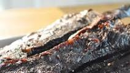

Spicy Beef Jerky

If you love hot and sweet we're confident this will be your favorite. An ultimate treat for family outings, sporting events, camping or hiking trips. Pineapple juice is the key that ties the flavors together. Go easy on the black and red pepper as the flavor goes a long ways!
Ingredients
- 1 pound lean Beef Sirloin Tip, sliced into 1/8 inch strip
- ⅔ cup Soy Sauce
- ½ cup Brown Sugar
- ¼ cup Worcestershire Sauce
- ½ cup Pineapple Juice
- 5 tablespoons Liquid Smoke
- 1 tablespoon Onion Powder
- 1 tablespoon Garlic Powder
- 2 teaspoons Black Pepper
- ⅓ cup Balsamic Vinegar
- 1 teaspoon Red Pepper Flakes, or to taste (Optional)
Steps
- In a small bowl or cup, mix together the onion powder, garlic powder, and some cracked black pepper. Season the meat lightly, using only part of the mixture. Reserve the remaining spices. Place into an airtight plastic container or bowl, and refrigerate.
- In a saucepan over medium heat, mix together the brown sugar, soy sauce, teriyaki sauce, Worcestershire sauce, balsamic vinegar, liquid smoke flavoring and pineapple juice. Heat until the brown sugar has completely dissolved. Refrigerate marinade until cool.
- Add the meat to the marinade and toss until all of the pieces are evenly coated. Cover with plastic wrap (or transfer to a large ziplock bag) and marinate in the refrigerator for at least 12 hours or overnight. Toss the meat (or flip the bag) once or twice to be sure the meat marinates evenly.
- Pour cooled marinade over the seasoned meat, and mix by hand to coat. Seal the bowl, and refrigerate for at least 3 hours.
- Arrange the beef strips on the rack of a dehydrator, and sprinkle with a little bit more of the spice mixture and red pepper flakes if using. Dry for 5 hours, or to your desired dryness.